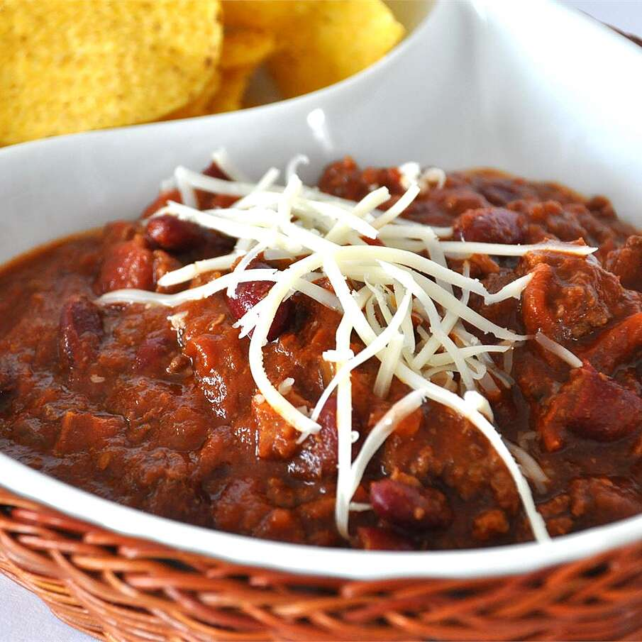

Chilli Rick's

Description
I made this for a Chili Cookoff and won the grand prize, 20 our of 23 votes! The BBQ sauce and bacon were wonderfull flavors! I also made a zapped in a food processer sour cream and cilanto for the top, soooooo good!
Ingredients
- 2 (29 ounce) cans tomato sauce
- 2 (28 ounce) cans peeled and diced tomatoes
- 2 cups diced onion
- 1 tablespoon Italian seasoning
- 1 pound bacon, diced
- 2 pounds spicy sausage
- 3 pounds lean ground beef
- 1 (32 ounce) bottle hickory smoke barbeque sauce
- ½ cup chili powder
- 4 (15.25 ounce) cans kidney beans, undrained
- 2 (1 ounce) squares unsweetened chocolate, chopped
Steps
- In a large pot or Dutch oven over medium heat, combine tomato sauce, tomatoes, onion and Italian seasoning.
- In a large skillet over medium heat, cook bacon until slightly crisp. Drain and stir into the pot.
- In the same skillet over medium heat, cook sausage until brown. Drain and stir into the pot.
- In the same skillet over medium heat, cook the beef until brown. Drain and stir into the pot.
- Stir the barbeque sauce and chili powder into the pot; taste and adjust seasonings. Stir in the kidney beans and chocolate and simmer until flavors are well blended. Serve.
Original Source